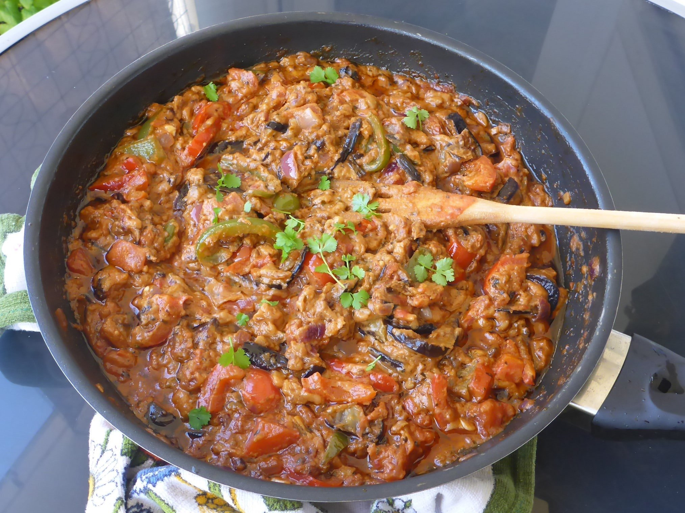
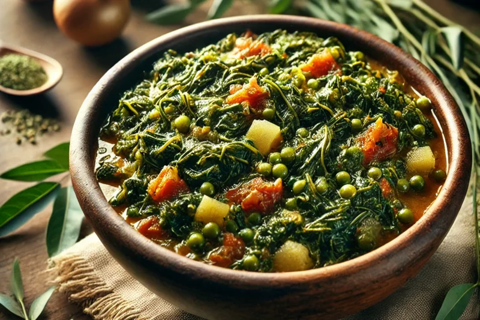

Culinary region
East Africa
From the Ethiopian highlands to the Swahili coast, East African food is built on shared platters, slow-simmered stews and bold spice blends like berbere and mitmita. Meals are eaten together, often by hand, from one large plate.
Staples
- Teff, the tiny grain behind injera
- Maize, cooked into ugali across Kenya and Tanzania
- Cassava and its leaves, as in Rwandan isombe
- Matoke (green bananas), steamed or stewed
- Beans and lentils, for everyday stews
Cooking techniques
- Slow-cooking onions for a deep stew base (wat)
- Clarifying butter with spices into niter kibbeh
- Fermenting teff batter for several days
- Simmering in coconut milk on the Swahili coast
Dishes to try

Doro Wat
Ethiopia, Slow-cooked chicken stew with berbere
View recipe →
Salatat aswad
A smooth, luscious texture where tender cooked eggplant blends seamlessly with creamy peanut paste.

Isombe
Rwanda, Cassava leaves cooked with peanut